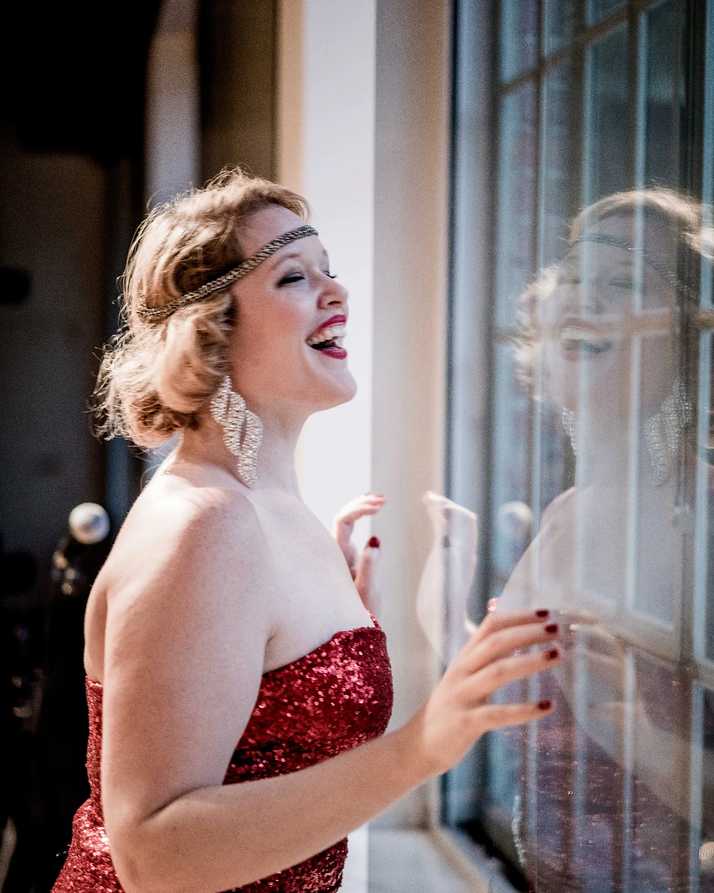
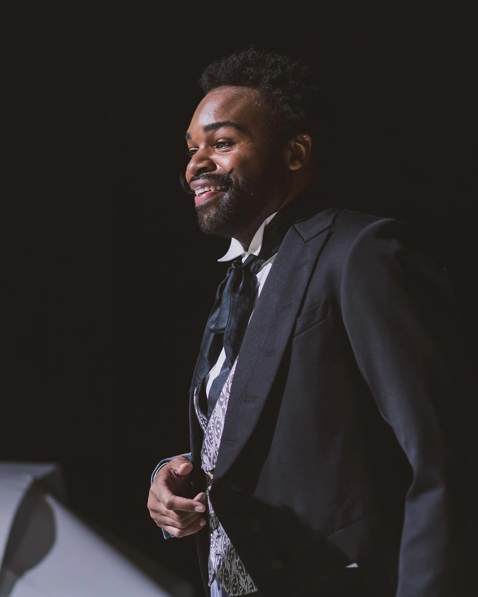
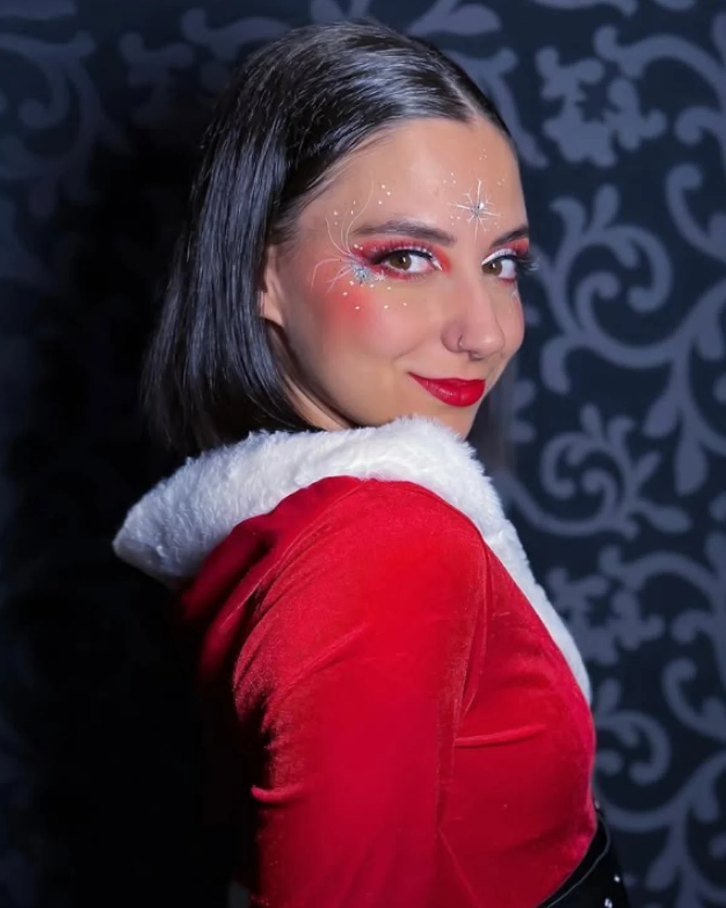
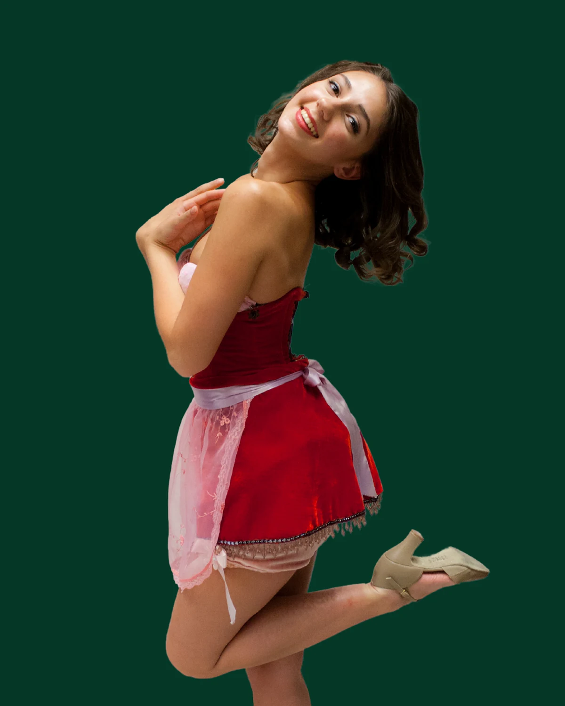
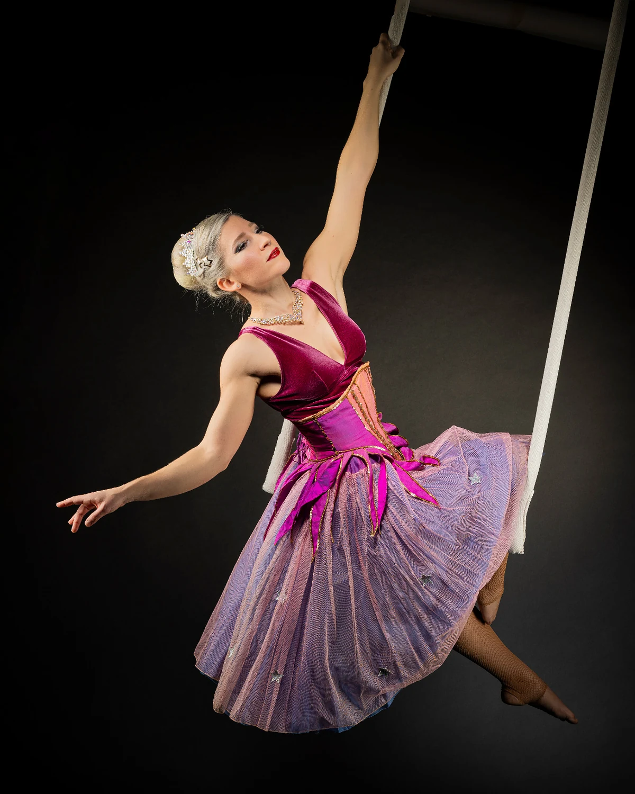

Holly
Anne Wieben
Eine Weihnachtselfe mit Herz, Stimme und einem heimlichen Plan.

Die Weihnachts-Dinnershow
Die Suche nach Mrs. Claus.

Die Geschichte
Santa ist Single. Seine Elfen finden: Das muss sich ändern.
Holly und Jolly starten heimlich ein Casting für die zukünftige Mrs. Claus. Kandidatinnen treffen ein, Erwartungen geraten durcheinander und Ivy Grimm setzt alles daran, das romantische Weihnachtsprojekt zu verhindern.
Santa Baby verbindet Dinnershow, Live-Musik, Tanz und pointierte Comedy zu einer festlichen Geschichte für Erwachsene. Opulent, verspielt und garantiert weniger still als die Heilige Nacht.
Termine 2026 / 27
Auf der Bühne
Sieben Figuren, sieben festliche Temperamente – und ein Weihnachts-Casting, das garantiert nicht nach Plan verläuft.

Eine Weihnachtselfe mit Herz, Stimme und einem heimlichen Plan.

Optimist, Mitverschwörer und Spezialist für festliches Chaos.

Nicht jede Elfe glaubt an Happy Ends – schon gar nicht für Santa.
Eine Kandidatin mit Charme, Temperament und überraschenden Talenten.

Glitzernd, glamourös und fest entschlossen.

Kühl wie Schnee – zumindest auf den ersten Blick.
Der begehrteste Junggeselle des Nordpols.
Vien.noir presents